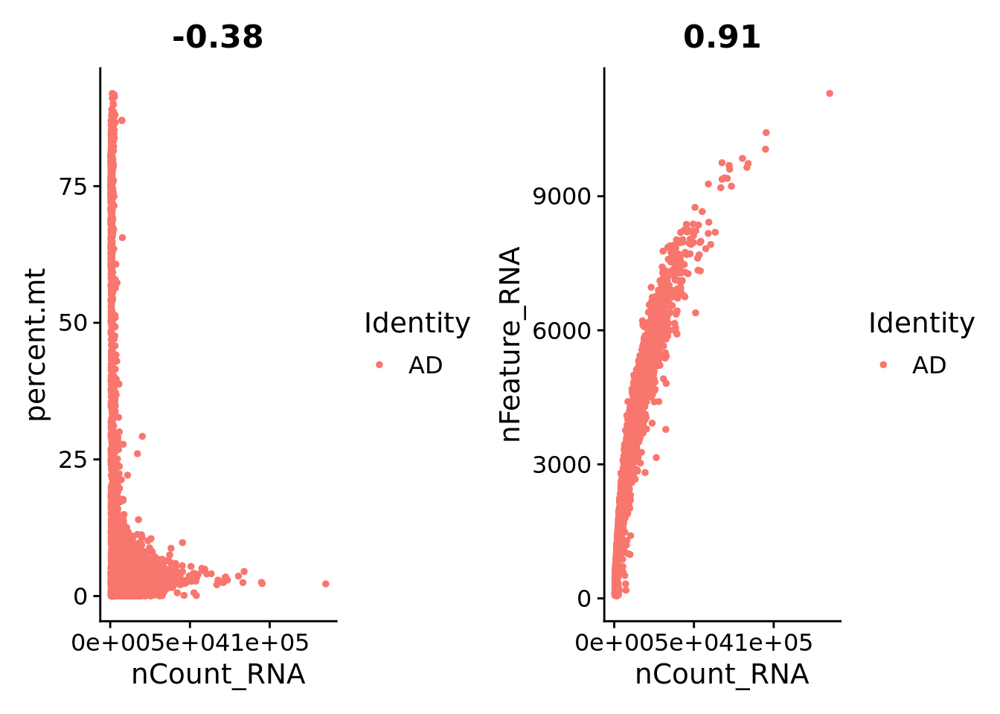
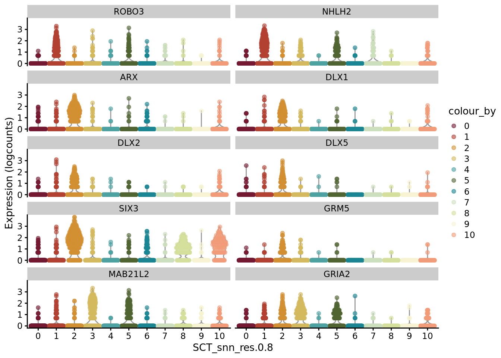

AD_analysis
petrsh
2022-01-10
Last updated: 2022-01-10
Checks: 6 1
Knit directory: AD_CO_scRNAseq/
This reproducible R Markdown analysis was created with workflowr (version 1.6.2). The Checks tab describes the reproducibility checks that were applied when the results were created. The Past versions tab lists the development history.
The R Markdown is untracked by Git. To know which version of the R Markdown file created these results, you’ll want to first commit it to the Git repo. If you’re still working on the analysis, you can ignore this warning. When you’re finished, you can run wflow_publish to commit the R Markdown file and build the HTML.
Great job! The global environment was empty. Objects defined in the global environment can affect the analysis in your R Markdown file in unknown ways. For reproduciblity it’s best to always run the code in an empty environment.
The command set.seed(20220110) was run prior to running the code in the R Markdown file. Setting a seed ensures that any results that rely on randomness, e.g. subsampling or permutations, are reproducible.
Great job! Recording the operating system, R version, and package versions is critical for reproducibility.
Nice! There were no cached chunks for this analysis, so you can be confident that you successfully produced the results during this run.
Great job! Using relative paths to the files within your workflowr project makes it easier to run your code on other machines.
Great! You are using Git for version control. Tracking code development and connecting the code version to the results is critical for reproducibility.
The results in this page were generated with repository version 70227c2. See the Past versions tab to see a history of the changes made to the R Markdown and HTML files.
Note that you need to be careful to ensure that all relevant files for the analysis have been committed to Git prior to generating the results (you can use wflow_publish or wflow_git_commit). workflowr only checks the R Markdown file, but you know if there are other scripts or data files that it depends on. Below is the status of the Git repository when the results were generated:
Untracked files:
Untracked: analysis/AD_CO_integrated_analysis.Rmd
Untracked: analysis/AD_analysis.Rmd
Untracked: analysis/CO_analysis.Rmd
Untracked: data/AD/
Untracked: data/CO/
Untracked: data/Kanton_2019/
Untracked: data/selection_dyn_genes.txt
Unstaged changes:
Modified: analysis/index.Rmd
Note that any generated files, e.g. HTML, png, CSS, etc., are not included in this status report because it is ok for generated content to have uncommitted changes.
There are no past versions. Publish this analysis with wflow_publish() to start tracking its development.
Dependencies
library(Seurat)
library(dplyr)
library(here)
library(ggplot2)
library(ggthemes)
library(SeuratDisk)
# not loaded but required:
# scater - function plotExpression
# SoupX - function quickMarkers
# Nebulosa - function plot_densityImporting CellRanger output and cell-level quality control
D2 <- Read10X(here("data","AD"))
Sat_D2 <- CreateSeuratObject(D2, min.cells = 3)
Sat_D2 <- PercentageFeatureSet(Sat_D2, pattern = "^MT-", col.name = "percent.mt")
Sat_D2 <- PercentageFeatureSet(Sat_D2, pattern = "^RP[SL][[:digit:]]|^RPLP[[:digit:]]|^RPSA", col.name = "percent.ribo")
Idents(Sat_D2) <- rep("AD", length(Sat_D2$orig.ident))
VlnPlot(Sat_D2, c("nFeature_RNA", "nCount_RNA", "percent.mt", "percent.ribo"), ncol = 2, cols = "#4EA2A2") &
theme_tufte() &
theme(legend.position="none")summary(Sat_D2$nFeature_RNA) Min. 1st Qu. Median Mean 3rd Qu. Max.
52 1139 2973 2923 4228 11301 summary(Sat_D2$nCount_RNA) Min. 1st Qu. Median Mean 3rd Qu. Max.
500 2218 7705 10058 14137 135137 summary(Sat_D2$percent.mt) Min. 1st Qu. Median Mean 3rd Qu. Max.
0.000 2.402 4.120 13.614 8.739 91.966 summary(Sat_D2$percent.ribo) Min. 1st Qu. Median Mean 3rd Qu. Max.
0.4205 7.7544 13.2051 14.9465 21.2908 71.0363 plot1 <- FeatureScatter(Sat_D2, feature1 = "nCount_RNA", feature2 = "percent.mt")
plot2 <- FeatureScatter(Sat_D2, feature1 = "nCount_RNA", feature2 = "nFeature_RNA")
plot1 + plot2
Sat_D2 <- subset(Sat_D2, subset = nFeature_RNA > 1000 & nFeature_RNA < 7000 & percent.mt < 10)Normalization
Sat_D2 <- SCTransform(Sat_D2, verbose = FALSE)Cell-cycle scoring and dimension reduction
Sat_D2 <- CellCycleScoring(Sat_D2, s.features = cc.genes.updated.2019$s.genes,
g2m.features = cc.genes.updated.2019$g2m.genes, set.ident = TRUE)
Sat_D2 <- RunPCA(Sat_D2, features = VariableFeatures(Sat_D2))
Sat_D2 <- RunUMAP(Sat_D2, dims = 1:15)
DimPlot(Sat_D2, group.by = "Phase") +
theme_tufte()Clustering
set.seed(42)
Sat_D2 <- FindNeighbors(Sat_D2, dims=1:15, verbose = FALSE)
Sat_D2 <- FindClusters(Sat_D2, resolution = 0.8, verbose = FALSE)
autumn_palette <- c("#751A33", "#B34233", "#D28F33", "#D4B95E", "#4EA2A2", "#506432",
"#1A8693", "#cbdfbd", "#d4e09b", "#f6f4d2", "#f19c79", "#a44a3f")
DimPlot(Sat_D2, label = T, group.by = "SCT_snn_res.0.8", cols = c(autumn_palette, "grey")) +
theme_tufte()
Cluster-level quality control
VlnPlot(Sat_D2, c("nFeature_RNA", "nCount_RNA", "percent.mt", "percent.ribo"), ncol = 2, cols = c(autumn_palette, "grey")) &
theme_tufte() &
theme(legend.position="none")We can see that the cluster 5 has suspiciously low percentage of expressed mitochondrial genes and low number of detected genes. We will explore the markers of this cluster before proceeding with the further analyses.
FindMarkers(Sat_D2, ident.1 = "5", logfc.threshold = 0.5, features = VariableFeatures(Sat_D2), verbose = FALSE) %>%
head(n=20) p_val avg_log2FC pct.1 pct.2 p_val_adj
MT-ND3 6.926450e-65 -1.3897269 0.889 0.992 1.522711e-60
MT-CO3 4.307718e-63 -1.3833762 0.898 0.994 9.470087e-59
SLC3A2 7.141368e-62 1.6383437 0.906 0.601 1.569958e-57
MT-CO2 7.684752e-61 -1.3803355 0.910 0.993 1.689416e-56
DDIT3 5.986437e-57 1.7169770 0.697 0.312 1.316058e-52
MT-ATP6 1.223633e-55 -1.3268214 0.922 0.995 2.690035e-51
TMSB15A 3.159841e-54 -1.1052841 0.889 0.961 6.946595e-50
NREP 6.009393e-54 -1.2241557 0.648 0.893 1.321105e-49
MT-CYB 7.146861e-51 -1.1300007 0.910 0.993 1.571166e-46
GADD45B 4.048980e-47 1.1478647 0.307 0.058 8.901277e-43
GDF15 2.247286e-46 0.7795066 0.242 0.034 4.940434e-42
TUBA1A 8.884144e-46 -1.4418068 0.971 0.994 1.953090e-41
SNHG12 1.239532e-45 1.0919364 0.541 0.196 2.724988e-41
STMN1 1.028665e-43 -1.0874911 0.963 0.992 2.261417e-39
MT-CO1 2.173821e-43 -0.9521556 0.922 0.995 4.778929e-39
ZFAS1 4.345152e-42 1.3269365 0.980 0.941 9.552381e-38
ATF3 1.132432e-41 1.0917357 0.439 0.135 2.489538e-37
HRK 1.878270e-39 0.7561372 0.295 0.062 4.129190e-35
FTL 3.792618e-39 1.4372162 0.996 1.000 8.337692e-35
TUBB3 2.284768e-38 -1.6938210 0.902 0.934 5.022835e-34Among top upregulated genes we can find the genes that are involved in the pro-apoptotic signaling. Given the low expression of mitochondrial genes and low number of detected genes, we think that these are damaged cells without cytoplasmatic membrane and therefore we will remove this cluster and redo the preprocessing.
Sat_D2_sub <- subset(Sat_D2, SCT_snn_res.0.8 == 5, invert=T)
Sat_D2_sub <- SCTransform(Sat_D2_sub, assay = 'RNA', new.assay.name = 'SCT', verbose = FALSE)
Sat_D2_sub <- RunPCA(Sat_D2_sub, features = VariableFeatures(Sat_D2_sub))
Sat_D2_sub <- RunUMAP(Sat_D2_sub, dims = 1:15)
DimPlot(Sat_D2_sub, label = T, group.by = "Phase") +
theme_tufte()set.seed(42)
Sat_D2_sub <- FindNeighbors(Sat_D2_sub, dims=1:15, verbose = FALSE)
Sat_D2_sub <- FindClusters(Sat_D2_sub, resolution = 0.8, verbose = FALSE)
DimPlot(Sat_D2_sub, label = T, group.by = "SCT_snn_res.0.8", cols = autumn_palette) +
theme_tufte()VlnPlot(Sat_D2_sub, c("nFeature_RNA", "nCount_RNA", "percent.mt", "percent.ribo"), cols = autumn_palette, ncol = 2) &
theme_tufte() &
theme(legend.position="none")# save cell barcodes to subset the aggregated dataset
write.csv(sub("-1","-2",colnames(Sat_D2_sub)), here("output", "AD_filtered_barcodes.csv"),
row.names = FALSE)
# save clusters
write.csv(Sat_D2_sub$SCT_snn_res.0.8, here("output", "AD_clusters_res08.csv"),
row.names = TRUE)Regress out the difference between S and G2M score.
Sat_D2_sub$cc_difference <- Sat_D2_sub$S.Score - Sat_D2_sub$G2M.Score
Sat_D2_sub <- SCTransform(Sat_D2_sub, assay = 'RNA', new.assay.name = 'SCT', vars.to.regress = "cc_difference", verbose = FALSE)
Sat_D2_sub <- RunPCA(Sat_D2_sub, features = VariableFeatures(Sat_D2_sub))
Sat_D2_sub <- RunUMAP(Sat_D2_sub, dims = 1:15)
DimPlot(Sat_D2_sub, label = T, group.by = "Phase") +
theme_tufte()set.seed(42)
Sat_D2_sub <- FindNeighbors(Sat_D2_sub, dims=1:15, verbose = FALSE)
Sat_D2_sub <- FindClusters(Sat_D2_sub, resolution = 0.8, verbose = FALSE)
DimPlot(Sat_D2_sub, label = F, group.by = "SCT_snn_res.0.8", cols = autumn_palette) +
theme_tufte()VlnPlot(Sat_D2_sub, c("nFeature_RNA", "nCount_RNA", "percent.mt", "percent.ribo"), cols = autumn_palette, ncol = 2) &
theme_tufte() &
theme(legend.position="none")# save Sat_D2_sub for SingleR classification
#saveRDS(Sat_D2_sub, here("output", "Sat_D2_sub.rds"))Identification of clusters specific genes using tf-idf (term frequency–inverse document frequency)
AD_markers <- SoupX::quickMarkers(Sat_D2_sub@assays$RNA@counts, Sat_D2_sub$SCT_snn_res.0.8, N = 6)
SCE_D2_sub <- as.SingleCellExperiment(Sat_D2_sub)
scater::plotExpression(SCE_D2_sub, features = unique(AD_markers$gene)[1:10], x = "SCT_snn_res.0.8", colour_by = "SCT_snn_res.0.8") +
scale_color_manual(values = autumn_palette)scater::plotExpression(SCE_D2_sub, features = unique(AD_markers$gene)[11:20], x = "SCT_snn_res.0.8", colour_by = "SCT_snn_res.0.8") +
scale_color_manual(values = autumn_palette)
scater::plotExpression(SCE_D2_sub, features = unique(AD_markers$gene)[21:30], x = "SCT_snn_res.0.8", colour_by = "SCT_snn_res.0.8") +
scale_color_manual(values = autumn_palette)scater::plotExpression(SCE_D2_sub, features = unique(AD_markers$gene)[31:33], x = "SCT_snn_res.0.8", colour_by = "SCT_snn_res.0.8") +
scale_color_manual(values = autumn_palette)Plot genes selected from the literature
genes_to_plot <- c("LY6H","MKI67", "SOX2", "SOX1", "PAX6", "NES", "DCX", "TUBB3", "MAP2",
"MAPT", "OLIG2", "PLP1", "S100B", "TMEM119", "RAX", "SIX3",
"GAD2","ASCL1", "NEUROD1", "NEUROD4", "NEUROG1", "EOMES", "APOE")
# not expressed in this dataset:"PDGFR1", "NEUROG4"
for (i in genes_to_plot){
g <- Nebulosa::plot_density(Sat_D2_sub, features = i) +
theme_tufte() +
theme(legend.position="none", axis.ticks = element_blank()) #legend.position="right"
print(g)
}
genes_to_plot <- c("HES1", "HES4", "HES5", "NOTCH1")
for (i in genes_to_plot){
g <- Nebulosa::plot_density(Sat_D2_sub, features = i) +
theme_tufte() +
theme(legend.position="none", axis.ticks = element_blank())
print(g)
}Subset non-proliferating NSC, neurons, radial glia and choroid plexus for CellRank analysis
Sat_D2_sub_neuro <- subset(Sat_D2_sub, SCT_snn_res.0.8 %in% c(0,8,9,10), invert = TRUE)
#
tmp_umap <- Sat_D2_sub_neuro@reductions$umap@cell.embeddings
tmp_umap <- tmp_umap[tmp_umap[,1] > -10,]
tmp_umap <- tmp_umap[tmp_umap[,2] < 7,]
Sat_D2_sub_neuro <- subset(Sat_D2_sub_neuro, cells = rownames(tmp_umap))
set.seed(42)
Sat_D2_sub_neuro <- FindNeighbors(Sat_D2_sub_neuro, dims=1:15, verbose = FALSE)
Sat_D2_sub_neuro <- FindClusters(Sat_D2_sub_neuro, resolution = 0.8, verbose = FALSE)
DimPlot(Sat_D2_sub_neuro, label = F, group.by = "SCT_snn_res.0.8", cols = autumn_palette) +
theme_tufte()VlnPlot(Sat_D2_sub_neuro, c("nFeature_RNA", "nCount_RNA", "percent.mt", "percent.ribo"), ncol = 2, cols = autumn_palette) &
theme_tufte() &
theme(legend.position="none")# save cell barcodes
write.csv(sub("-1","-2",colnames(Sat_D2_sub_neuro)), here("output", "AD_sub_neuro_barcodes.csv"),
row.names = FALSE)
# save clusters
write.csv(Sat_D2_sub_neuro$SCT_snn_res.0.8, here("output", "AD_sub_neuro_res08.csv"),
row.names = TRUE)
# convert to h5ad for CellRank
# Sat_D2_sub_neuro <- RenameCells(Sat_D2_sub_neuro, new.names = paste("D2_", sub("-1", "", colnames(Sat_D2_sub_neuro)), sep=""))
# SaveH5Seurat(Sat_D2_sub_neuro, filename = here("output","Sat_D2_sub.h5Seurat"))
# Convert(here("output","Sat_D2_sub.h5Seurat"), dest="h5ad")Identification of clusters specific genes using tf-idf (term frequency–inverse document frequency)
AD_sub_markers <- SoupX::quickMarkers(Sat_D2_sub_neuro@assays$RNA@counts, Sat_D2_sub_neuro$SCT_snn_res.0.8, N = 6)
SCE_D2_sub_neuro <- as.SingleCellExperiment(Sat_D2_sub_neuro)
scater::plotExpression(SCE_D2_sub_neuro, features = unique(AD_sub_markers$gene)[1:10], x = "SCT_snn_res.0.8", colour_by = "SCT_snn_res.0.8") +
scale_color_manual(values = autumn_palette)scater::plotExpression(SCE_D2_sub_neuro, features = unique(AD_sub_markers$gene)[11:22], x = "SCT_snn_res.0.8", colour_by = "SCT_snn_res.0.8") +
scale_color_manual(values = autumn_palette)
sessionInfo()R version 4.1.1 (2021-08-10)
Platform: x86_64-pc-linux-gnu (64-bit)
Running under: Ubuntu 20.04.3 LTS
Matrix products: default
BLAS: /usr/lib/x86_64-linux-gnu/blas/libblas.so.3.9.0
LAPACK: /usr/lib/x86_64-linux-gnu/lapack/liblapack.so.3.9.0
locale:
[1] LC_CTYPE=en_US.UTF-8 LC_NUMERIC=C
[3] LC_TIME=en_US.UTF-8 LC_COLLATE=en_US.UTF-8
[5] LC_MONETARY=en_US.UTF-8 LC_MESSAGES=en_US.UTF-8
[7] LC_PAPER=en_US.UTF-8 LC_NAME=C
[9] LC_ADDRESS=C LC_TELEPHONE=C
[11] LC_MEASUREMENT=en_US.UTF-8 LC_IDENTIFICATION=C
attached base packages:
[1] stats graphics grDevices utils datasets methods base
other attached packages:
[1] SeuratDisk_0.0.0.9019 ggthemes_4.2.4 ggplot2_3.3.5
[4] here_1.0.1 dplyr_1.0.7 SeuratObject_4.0.2
[7] Seurat_4.0.3.9011 workflowr_1.6.2
loaded via a namespace (and not attached):
[1] utf8_1.2.1 ks_1.13.2
[3] reticulate_1.20 tidyselect_1.1.1
[5] htmlwidgets_1.5.3 grid_4.1.1
[7] BiocParallel_1.26.1 Rtsne_0.15
[9] munsell_0.5.0 ScaledMatrix_1.0.0
[11] codetools_0.2-18 ica_1.0-2
[13] future_1.21.0 miniUI_0.1.1.1
[15] withr_2.4.2 colorspace_2.0-2
[17] Biobase_2.52.0 highr_0.9
[19] knitr_1.33 stats4_4.1.1
[21] SingleCellExperiment_1.14.1 ROCR_1.0-11
[23] tensor_1.5 listenv_0.8.0
[25] MatrixGenerics_1.4.0 labeling_0.4.2
[27] git2r_0.28.0 GenomeInfoDbData_1.2.6
[29] polyclip_1.10-0 bit64_4.0.5
[31] farver_2.1.0 Nebulosa_1.2.0
[33] rprojroot_2.0.2 parallelly_1.26.1
[35] vctrs_0.3.8 generics_0.1.0
[37] xfun_0.24 R6_2.5.0
[39] GenomeInfoDb_1.28.1 ggbeeswarm_0.6.0
[41] rsvd_1.0.5 hdf5r_1.3.3
[43] bitops_1.0-7 spatstat.utils_2.2-0
[45] DelayedArray_0.18.0 assertthat_0.2.1
[47] promises_1.2.0.1 scales_1.1.1
[49] beeswarm_0.4.0 gtable_0.3.0
[51] beachmat_2.8.0 globals_0.14.0
[53] goftest_1.2-2 rlang_0.4.11
[55] splines_4.1.1 lazyeval_0.2.2
[57] spatstat.geom_2.2-2 yaml_2.2.1
[59] reshape2_1.4.4 abind_1.4-5
[61] httpuv_1.6.1 tools_4.1.1
[63] ellipsis_0.3.2 spatstat.core_2.3-0
[65] jquerylib_0.1.4 RColorBrewer_1.1-2
[67] BiocGenerics_0.38.0 ggridges_0.5.3
[69] Rcpp_1.0.6 plyr_1.8.6
[71] sparseMatrixStats_1.4.0 zlibbioc_1.38.0
[73] purrr_0.3.4 RCurl_1.98-1.3
[75] rpart_4.1-15 deldir_0.2-10
[77] pbapply_1.4-3 viridis_0.6.1
[79] cowplot_1.1.1 S4Vectors_0.30.0
[81] zoo_1.8-9 SummarizedExperiment_1.22.0
[83] ggrepel_0.9.1 cluster_2.1.2
[85] fs_1.5.0 magrittr_2.0.1
[87] data.table_1.14.0 RSpectra_0.16-0
[89] scattermore_0.7 lmtest_0.9-38
[91] RANN_2.6.1 mvtnorm_1.1-2
[93] fitdistrplus_1.1-5 matrixStats_0.59.0
[95] patchwork_1.1.1 mime_0.11
[97] evaluate_0.14 xtable_1.8-4
[99] mclust_5.4.7 IRanges_2.26.0
[101] gridExtra_2.3 compiler_4.1.1
[103] scater_1.20.1 tibble_3.1.2
[105] KernSmooth_2.23-20 crayon_1.4.1
[107] htmltools_0.5.1.1 mgcv_1.8-38
[109] later_1.2.0 tidyr_1.1.3
[111] SoupX_1.5.2 DBI_1.1.1
[113] MASS_7.3-54 Matrix_1.4-0
[115] cli_3.0.0 parallel_4.1.1
[117] igraph_1.2.6 GenomicRanges_1.44.0
[119] pkgconfig_2.0.3 plotly_4.9.4.1
[121] scuttle_1.2.0 spatstat.sparse_2.0-0
[123] vipor_0.4.5 bslib_0.2.5.1
[125] XVector_0.32.0 stringr_1.4.0
[127] digest_0.6.27 pracma_2.3.3
[129] sctransform_0.3.2 RcppAnnoy_0.0.18
[131] spatstat.data_2.1-0 rmarkdown_2.9
[133] leiden_0.3.8 uwot_0.1.10
[135] DelayedMatrixStats_1.14.0 shiny_1.6.0
[137] lifecycle_1.0.0 nlme_3.1-153
[139] jsonlite_1.7.2 BiocNeighbors_1.10.0
[141] viridisLite_0.4.0 limma_3.48.1
[143] fansi_0.5.0 pillar_1.6.1
[145] lattice_0.20-45 fastmap_1.1.0
[147] httr_1.4.2 survival_3.2-13
[149] glue_1.4.2 png_0.1-7
[151] bit_4.0.4 stringi_1.6.2
[153] sass_0.4.0 BiocSingular_1.8.1
[155] irlba_2.3.3 future.apply_1.7.0